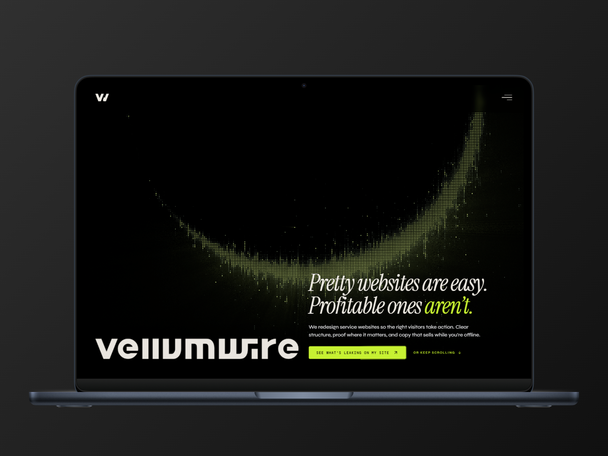

A studio site that closes before the call
Vellumwire is a web design studio focused on service businesses that need more inbound leads. The first project was the studio itself: building a site that could compress a full sales cycle into a single visit, for an audience that has been burned by agencies before and is skeptical by default.
~1k
organic sessions per week · no paid ads · no social presence
0
ad spend · traffic driven entirely by search intent and copy written for how prospects actually search
6
real sales objections addressed in the FAQ · every entry pulled from actual client conversations

Current state · standard agency site pattern
Most agency sites lead with portfolio quality. A prospect arriving from search hasn't decided yet whether the studio solves their problem. Showing work before establishing relevance asks for evaluation before trust.
The situation
Vellumwire is a web design studio focused on one outcome: service businesses that depend on inbound leads getting more of them. Before the site existed, there was no web presence, no positioning, no proof. The studio itself was the first client.
The challenge wasn't just design. It was building a site that could close leads without a sales call, for an audience that has been burned by agencies before.
The target client is a small business owner with an existing site that looks acceptable but doesn't generate calls. Getting them to trust a new studio they'd never heard of required establishing credibility before asking for anything — without a portfolio to show at the start.
The brief we wrote from this: build a site that sells the way a good salesperson would. Name the problem the prospect already has. Prove you understand it better than they do. Remove every reason not to take the next step, and make the next step feel like nothing.
The diagnosis
Before writing a single line of copy, we audited the competitive landscape and mapped the actual decision process of a cold prospect evaluating a redesign.
Market
Portfolio-first, always
Every competitor led with visual work. No one led with the business problem the prospect already had. Relevance was never established before asking for an evaluation.
CTA
High-commitment asks
"Request a quote" requires commitment before the prospect has decided they're interested. Most visitors leave without converting. The studio never finds out they existed.
Pricing
Nobody publishes it
Every engagement starts with a "contact for pricing" step that filters out small businesses before they start. It also signals that pricing is negotiated on the fly, which erodes trust before the first call.
The same six objections appeared in every prior sales conversation: timeline, cost, platform lock-in, whether to rebuild or fix, what the process looks like, and whether copy is included. None of these were addressed anywhere on a competitor site. Handling them in writing before the call was a straightforward structural advantage.
Problem-led positioning
The hero doesn't show a single screen. It opens with a contrast headline and names the outcome: the right visitors taking action. Portfolio comes after the visitor has already decided the problem is real.
A prospect who searched for "why isn't my website getting leads" needs to see that you understand the problem before they'll look at your work. Relevance earns the right to show proof.
The page follows a deliberate sequence. Each section answers one question the visitor is asking at that moment, in the order they'd ask it on a real sales call.
The sequence mirrors how a good salesperson sells. By the time the visitor hits the final CTA, they've already confirmed the problem is real, understood the approach, seen the pricing, and had their objections addressed. The ask at the end is the smallest step in the page.

The offer
The primary CTA across the site is a free 15-minute website diagnosis: a live screen-share where we identify conversion blockers in real time. No pitch, no deck, no retainer trap. The prospect keeps the fix list whether they hire the studio or not.
Standard CTA: "Hire us" or "Get a quote"
Asks for a large commitment from someone who just arrived and hasn't decided they're interested. Most visitors leave without converting. The studio never learns they existed.
Vellumwire CTA: Free 15-min diagnosis
Anyone with a site that isn't converting will take 15 free minutes to find out why. The CTA lowers perceived commitment to near zero while creating genuine value. It also functions as a sales call: the diagnosis demonstrates expertise before any proposal is made.
Nobody wants to "hire a designer." But a business owner who suspects their site is costing them leads will take a free, no-commitment session to find out what's wrong. The offer matches the visitor's actual state at the moment they arrive: aware of a problem, uncertain about the solution, not yet ready to spend money.

Pricing transparency
Full pricing is published on the site: from a $350 site checkup to an $8,000 full brand and web package. Exact ranges, no "contact for pricing."
Studios that hide pricing are usually negotiating against themselves. For a small business owner who has been burned before, a studio that shows its cards reads as trustworthy before they've spoken to anyone.
Publishing prices filters leads by budget before the first conversation. The clients who reach out already knowing the price are easier to close and faster to start. The ones who would have wasted a discovery call by being outside the budget are filtered before they book.

FAQ from real objections
Every FAQ entry came from a real objection that appeared in multiple sales conversations. The six topics that kept coming up: timeline, platform lock-in, copy ownership, whether to rebuild or fix, what the 15-minute diagnosis actually covers, and what happens if the client recently paid for a redesign elsewhere.
A FAQ built from real objections reads differently than one built from what the studio wants to say. Prospects recognize their own questions. When they do, it signals that the studio has dealt with their specific situation before — which is exactly what a skeptical buyer needs to see before committing to a call.
Objections that aren't handled on the site get raised on the call. That slows the decision and introduces doubt at the worst moment — when the prospect is already talking to the studio and has some degree of interest. Handling them in writing before the call shifts the conversation forward.

Result
Approximately 1,000 organic sessions per week. No paid ads. No LinkedIn presence. No content marketing at launch. Traffic driven entirely by search intent: structure, meta tags, schema markup, and copy written for how prospects actually search.
~1k
Organic sessions per week at steady state. Zero paid acquisition, zero social distribution.
Search analytics
0
Bounce from pricing page. Visitors who see the pricing stay and explore further.
Behavioral observation
6
Sales objections handled in writing before any call. Discovery starts at a different point.
Sales process
4w
Time from blank file to indexed, converting site. Strategy, copy, design, and front-end in one engagement.
Project duration
What the site does that isn't captured in a number: a cold prospect who finds it via search can go from awareness to booking a diagnosis without a single touchpoint from the studio. That was the goal from the brief. That's what it does.
What we'd do next: case study content targeted at specific verticals (law firms, contractors, clinics) to capture higher-intent long-tail traffic; a heatmap on the pricing section to understand where prospects drop before converting; an Insights section with original content to compound organic authority over time.
Let's talk
Got a project?
Let's make it work.